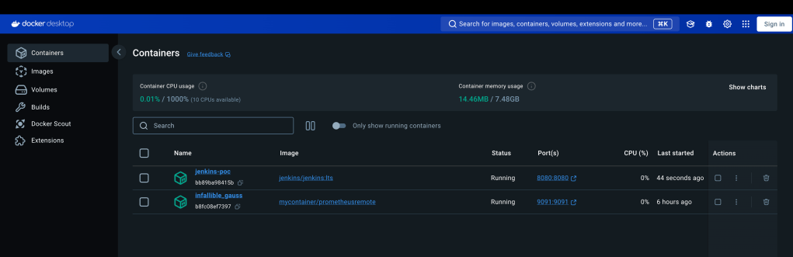

🚀 Jenkins to Azure DevOps Pipeline: A Proof of Concept using Docker 🐋

Migrating Jenkins Pipeline to Azure DevOps 🚀
In this post, I’ll guide you through a Proof of Concept (PoC) where we migrated a Jenkins pipeline to an Azure DevOps pipeline. By leveraging Docker, we keep things isolated, modular, and scalable, allowing you to streamline your CI/CD processes while fully embracing Azure DevOps for enhanced project management.
🔍 Why Migrate from Jenkins to Azure DevOps?
While Jenkins is a great CI/CD tool, Azure DevOps offers a more integrated platform, improving project management, traceability, and security. The benefits include:
-
Integrated Git repositories 🛠️
-
Built-in testing and release pipelines 📦
-
Cloud-native automation ☁️
🛠️ Jenkins Pipeline Setup
Let’s begin by looking at our Jenkins pipeline running in Docker:
docker run \
--name jenkins-poc \
-p 8080:8080 \
-v jenkins-data:/var/jenkins_home \
jenkins/jenkins:lts
In this setup, Jenkins pulls the latest code, runs unit tests, and builds a Docker image.
📸 Jenkins Pipeline (Before Migration)
Insert a screenshot of the Jenkins pipeline before migration here.
🔄 Migrating to Azure DevOps
Next, we migrate the Jenkins pipeline to Azure DevOps. The steps we followed:
-
Create a new Pipeline in Azure DevOps 🏗️.
-
Import Jenkins pipeline scripts and convert them into YAML-based Azure DevOps pipelines 📜.
-
Connect Azure Repos to automate builds for every commit. We also created a
Dockerfilefor automated build and deployment.
📄 Azure DevOps YAML Pipeline Example:
trigger:
- main
pool:
vmImage: 'ubuntu-latest'
steps:
- task: UseDocker@0
inputs:
containerRegistry: 'YourContainerRegistry'
repository: 'YourRepo'
command: 'build'
Dockerfile: 'Dockerfile'
This pipeline replicates what we initially set up in Jenkins, now fully integrated with Azure DevOps.
📸 Azure DevOps Pipeline (After Migration)
Insert a screenshot of the Azure DevOps pipeline after migration here.
🚀 Key Takeaways
By migrating to Azure DevOps, we achieved:
-
Better integration with Azure cloud services 🌐.
-
Centralized pipeline management with built-in boards and repositories 📊.
-
Enhanced scalability using cloud-native deployment models ☁️.
🔗 Connect with Me:
Feel free to share your thoughts or ask any questions! Let’s keep pushing CI/CD to the next level! 💪
This GitHub-ready README gives you a clean format to showcase your pipeline migration journey. You can easily add screenshots and adjust the links as needed!
Imported from rifaterdemsahin.com · 2024